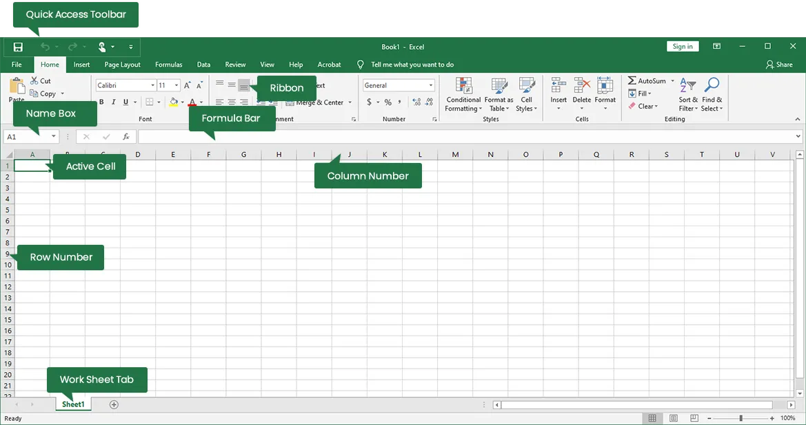

Chapter 4: Application Package
MS-Word (Word Processor)
Introduction: MS-Word is a word processing software from
Microsoft, used to create, edit, store, and print documents. It offers
features for text editing, spell-checking, inserting graphics, and
more. Documents are saved with a ".doc" or ".docx" extension.

Features:
- Fast Operation: No mechanical movements, so it operates quickly.
- Editing: Easy to insert, delete, modify text, and format (e.g., bold, italic, font style, color).
- Permanent Storage: Documents can be saved electronically.
- Graphics: Insert pictures, graphs, and charts.
- OLE: Allows sharing of data between applications via embedded objects (e.g., charts, audio).
- Mail Merge: Create multiple documents (e.g., letters, labels) using data from a list.
- Searching: Search and replace words across documents.
- Printing: Easily print documents.
- Formatting: Enhance document appearance (e.g., paragraph alignment, bullet points, borders, watermarks).
- Spelling & Grammar Checker: Detects and corrects errors.
- Thesaurus: Find synonyms and antonyms with a few clicks.
MS-Excel (Spreadsheet)
Introduction: MS-Excel is spreadsheet software for organizing,
analyzing, and calculating data. It is widely used for financial
modeling, statistical analysis, and creating charts. Excel files have
".xls" or ".xlsx" extensions.

Features:
- Multiple Worksheets: Work with multiple sheets at once.
- Charts & Graphs: Create various visual representations of data.
- Data Management: Organize and sort large volumes of data.
- Calculations: Perform automatic calculations using formulas.
- Formatting: Customize data with fonts, colors, etc.
- Cell References: Use relative (e.g., A1) and absolute (e.g., $A$1) references in formulas.
- Data Storage: Save data electronically.
- Internet Features: Web toolbar and online linking support.
MS-PowerPoint (Presentation)
Introduction: MS-PowerPoint is a presentation software for
creating dynamic, professional slideshows using text, images, charts,
and multimedia. Files have ".ppt" or ".pptx" extensions.
Features:
- Formatting: Customize fonts, colors, and hyperlinks to enhance presentation.
- Simple Operations: Support for cut, copy, paste, and find/replace.
- Predefined Layouts & Templates: Create presentations quickly with themes and templates.
- Slide Transitions & Effects: Add animations and slide transitions.
- Custom Animations: Design unique animations for slides.
- Hyperlinks: Include both internal and external links.
- Charts & Graphs: Visualize data for effective communication.
- Internet Features: Web toolbar and online support.
Questions and Answers
1. What is Mail Merge in Microsoft Word?
Mail Merge is a feature in Microsoft Word that allows users to create personalized documents, such as letters or labels, by combining a template with data from a source, such as an Excel spreadsheet.
The Mail Merge process consists of three main steps:
- Creating the Main Document: This is the template where you insert placeholders (called merge fields) for personalized data.
- Selecting the Data Source: This is usually an Excel file containing the information you want to merge into the document, like names, addresses, etc.
- Inserting Merge Fields: You insert fields into the main document to pull information from the data source (e.g., name, address) and place it in the correct location.
Once the document and data are prepared, Word can generate multiple personalized documents from the same template, saving time on tasks like sending form letters.
2. What is the Office Package?
The Office Package refers to a suite of productivity software developed by Microsoft, commonly used for creating documents, spreadsheets, presentations, and managing emails. The most common programs in the Office Package include:
- Microsoft Word: Used for creating and editing text documents.
- Microsoft Excel: A spreadsheet application used for data organization, analysis, and calculation.
- Microsoft PowerPoint: Used for creating and delivering presentations.
- Microsoft Outlook: An email management and scheduling program.
- Microsoft Access: A database management system.
These applications are widely used in both educational and business environments for efficient data handling and document creation.
3. What is VLOOKUP in Microsoft Excel?
VLOOKUP (Vertical Lookup) is a function in Excel that allows users to search for a value in the first column of a table and return a corresponding value in the same row from another column. It's widely used for looking up data in large datasets.
The VLOOKUP formula structure is:
=VLOOKUP(lookup_value, table_array, col_index_num, [range_lookup])
- lookup_value: The value you want to search for in the first column of the table.
- table_array: The range of cells that contains the data, including the column you want to look up.
- col_index_num: The column number (starting from 1) from which the matching value will be returned.
- [range_lookup]: Optional. TRUE for an approximate match or FALSE for an exact match.
For example, if you have a list of employees with their IDs and salaries, you can use VLOOKUP to find an employee's salary based on their ID.
4. What is Conditional Formatting in Microsoft Excel?
Conditional Formatting in Excel allows you to apply specific formatting (such as color, bold, or italics) to cells that meet certain conditions. This is useful for visually highlighting important information, such as high or low values, duplicate entries, or dates within a certain range.
To apply conditional formatting:
- Highlight the cells or range where you want to apply the formatting.
- Go to the Home tab and click Conditional Formatting.
- Choose a rule, such as Highlight Cell Rules or Top/Bottom Rules, or create a custom rule.
For example, you can highlight all cells with values greater than 1000 in green or all negative numbers in red.
5. What are Pivot Tables in Microsoft Excel?
A Pivot Table is a powerful tool in Excel used to summarize, analyze, explore, and present large sets of data in a more meaningful way. It allows users to quickly create reports by grouping and summarizing data based on various criteria.
To create a Pivot Table:
- Select the data you want to analyze.
- Go to the Insert tab and click on Pivot Table.
- In the Pivot Table Field List, drag and drop fields into the Rows, Columns, Values, and Filters areas.
For example, you can create a Pivot Table to calculate the total sales per region or to count the number of products sold by category.
6. What is the use of the COUNTIF function in Microsoft Excel?
The COUNTIF function in Excel counts the number of cells in a range that meet a specific condition. It's useful for quickly counting values that match certain criteria, such as how many times a particular word or number appears in a dataset.
The COUNTIF formula structure is:
=COUNTIF(range, criteria)
- range: The range of cells you want to evaluate.
- criteria: The condition that the cells must meet (e.g., a number, text, or expression).
For example, =COUNTIF(A1:A10, ">50") will count the number of cells in the range A1 to A10 that contain a value greater than 50.
7. What is the use of the CONCATENATE function in Microsoft Excel?
The CONCATENATE function in Excel is used to join two or more text strings into a single string. It's useful when you want to combine first and last names or merge data from multiple cells into one.
The CONCATENATE formula structure is:
=CONCATENATE(text1, text2, ...)
For example, if cell A1 contains "John" and cell B1 contains "Doe," =CONCATENATE(A1, " ", B1) will result in "John Doe."